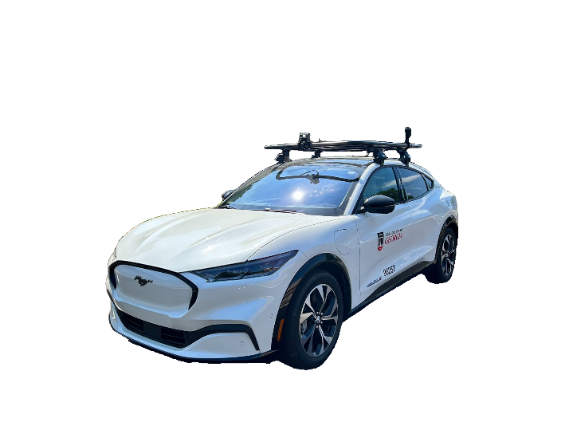

WACV 2027 Accepted
DriveDegrade
When Does Corruption Break the Plan? A Degradation-Tolerance Benchmark for Camera-Only End-to-End Driving.
University of Georgia · Mobility Lab
Connecting autonomous vehicles, intelligent infrastructure,
and the people who depend on them.
Our perspective
Mobility is more than a vehicle. It is a connected system.
At the University of Georgia, we study autonomous driving, robotics, and transportation infrastructure together. Our research connects perception, planning, and control with the demands of real roads and communities.
Meet the people behind the researchResearch directions
From learning-based autonomy
to connected transportation systems.
Research spotlight
Beyond the algorithm
Our work connects automated driving systems with the infrastructure they navigate—from urban intersections to rural and tribal communities.
Explore our projects
From the lab
DriveDegrade and FALCON have been accepted at the IEEE/CVF Winter Conference on Applications of Computer Vision (WACV 2027).
DriveDegrade paper FALCON codeBehavioral Analysis and Impact Assessment of Advanced Driver Assistance Systems' Interaction with Traffic Signs has been recommended for presentation at the TRB 2027 Annual Meeting.
End-to-End Automated Driving Under Camera Degradation: Planning Tolerance Thresholds and Closed-Loop Evidence has been recommended for presentation at the TRB 2027 Annual Meeting.